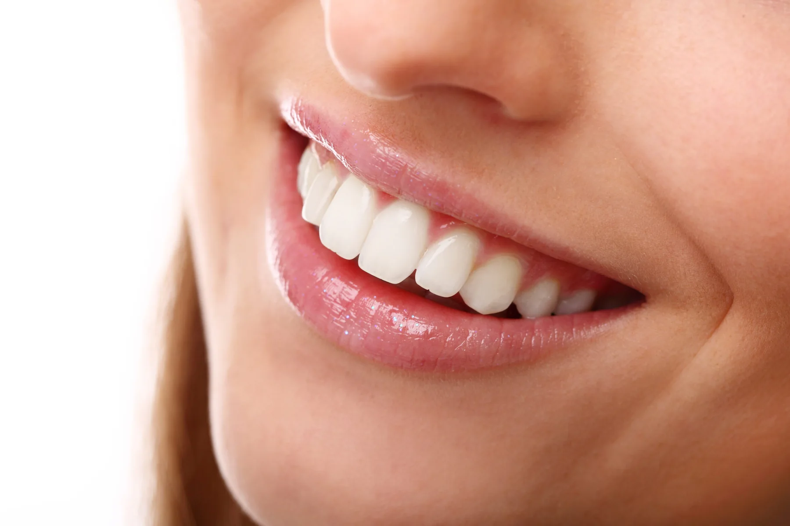
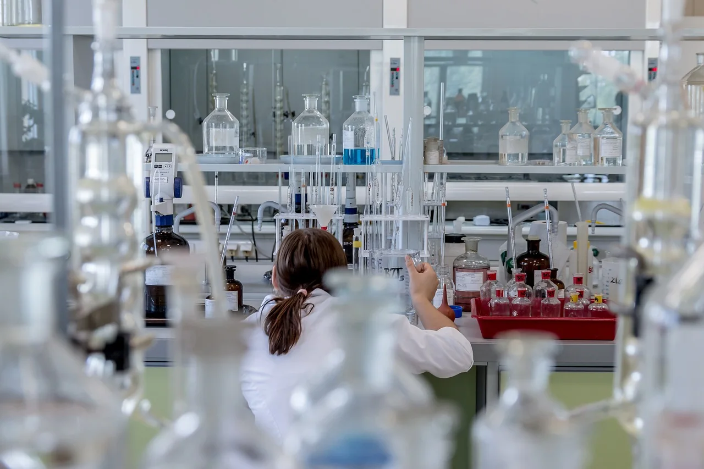

Die geplante placebokontrollierte Doppelblindstudie zu SalvaRok
Ein Forschungskonzept zu Mundgesundheit, Parodontitis und der möglichen Rolle gezielter Mikronährstoffsupplementierung.
Beitrag lesen →Forschung
Forschung ist für DOK ROK kein dekoratives Versprechen, sondern ein strukturierter Prozess aus Fragestellung, Evidenz, biologischer Plausibilität, Qualität und transparenter Kommunikation.
Forschungsverständnis
Biologische Mechanismen, klinischer Kontext, Ernährung, Lebensweise, Komorbiditäten und individuelle Voraussetzungen müssen gemeinsam betrachtet werden.
Der NutraMedicine-Ansatz untersucht Schnittstellen zwischen konventioneller Medizin, Biochemie, Genetik, Mikronährstoffen und ausgewählten Naturstoffen. Entscheidend ist nicht, ob etwas „natürlich“ oder „technisch“ ist, sondern ob es nachvollziehbar, sicher, qualitätsgesichert und für die jeweilige Fragestellung relevant ist.
Forschungsweg
Medizinische Relevanz, Zielpopulation und bestehende Versorgungslücke definieren.
Biologische Plausibilität, Literatur, Risiken und vorhandene Daten systematisch prüfen.
Formulierung, Dosierung, Herstellung, Analytik und Dokumentation miteinander verbinden.
Ergebnisse messen, Grenzen benennen und Erkenntnisse kontinuierlich weiterentwickeln.
Themenfelder
Mundgesundheit, Neurologie, Mikronährstoffe, Pilzbiologie, seltene Erkrankungen, medizinische Ethik und neue Darreichungskonzepte.
Mechanismen verstehen, Gemeinsamkeiten differenzieren, Übertragbarkeit kritisch prüfen.
Forschung immer an Patientennutzen, Sicherheit und realen Versorgungssituationen spiegeln.
Grenzen der Evidenz sichtbar machen und Aussagen nachvollziehbar formulieren.
Forschungsarchiv

Ein Forschungskonzept zu Mundgesundheit, Parodontitis und der möglichen Rolle gezielter Mikronährstoffsupplementierung.
Beitrag lesen →
Der Ansatz hinter einem nicht verschreibungspflichtigen Formulierungskonzept zur Verkürzung von anhaltendem Schluckauf.
Beitrag lesen →
Warum die Vitamine A, B1, B12, C und D in neurologischer Diagnostik und Versorgung Beachtung verdienen.
Beitrag lesen →Sprechen Sie mit uns über Forschung, Produktkonzepte, Qualität oder medizinisch-wissenschaftliche Projekte.